Home / Toys / Crystal-growing kit for kids (crystal salt, moulds, instructions, STEM experiment kit)

Illustration similar – shows the product type.
Toys
Crystal-growing kit for kids (crystal salt, moulds, instructions, STEM experiment kit)
Compact experiment kit with which children grow their own crystals in simple steps: a STEM gift for birthdays and Christmas.
The crystal-growing kit combines experiment and crafting: from a salt solution, children grow their own crystals within a few days and can then display them. For the EU market the Toy Safety Directive, EN 71-3 and, depending on the contents, EN 71-4 or EN 71-5 apply.
Technical data
| Type | Crystal-growing/STEM experiment kit |
|---|---|
| Packaging | Package 7 x 7 x 9 cm, 0.3 kg gross, brown carton |
| Customs tariff number (HS) | 95030070 |
EU standards and regulations
2009/48/ECToy Safety Directive: CE marking, declaration of conformity, chemical risk assessmentEN 71-4Experimental sets for chemistry and related activities (contents, instructions, warnings)EN 71-5Chemical toys (sets) other than experimental sets, depending on contentsEN 71-3Migration of certain elements (moulds, plastic parts)(EG) 1272/2008CLP: classification and labelling of the salts/crystal formers(EU) 2023/988GPSR: EU responsible person, traceability, warnings
Goes well with

STEM kit solar robot 12-in-1 (no batteries needed, age 8+)

Magic sand / play sand 1 kg (colours of choice, optionally with moulds and tray)

Dig kit dino fossil (plaster block with skeleton, tools, single box or display)Plaster block with a hidden dino skeleton that children uncover with tools and then assemble.
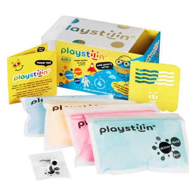
Modelling dough set, 6 tubs of 50 g (non-toxic, ages 3+)Modelling dough in six colours for children.
More products in this category

Magnetic building tiles set, 100 pcs (plastic, STEM/Montessori)

Interlocking building brick set, 500 pcs (own design, no licensed motifs)500 colourful plastic bricks for free building, no licensed motifs, with own packaging design.
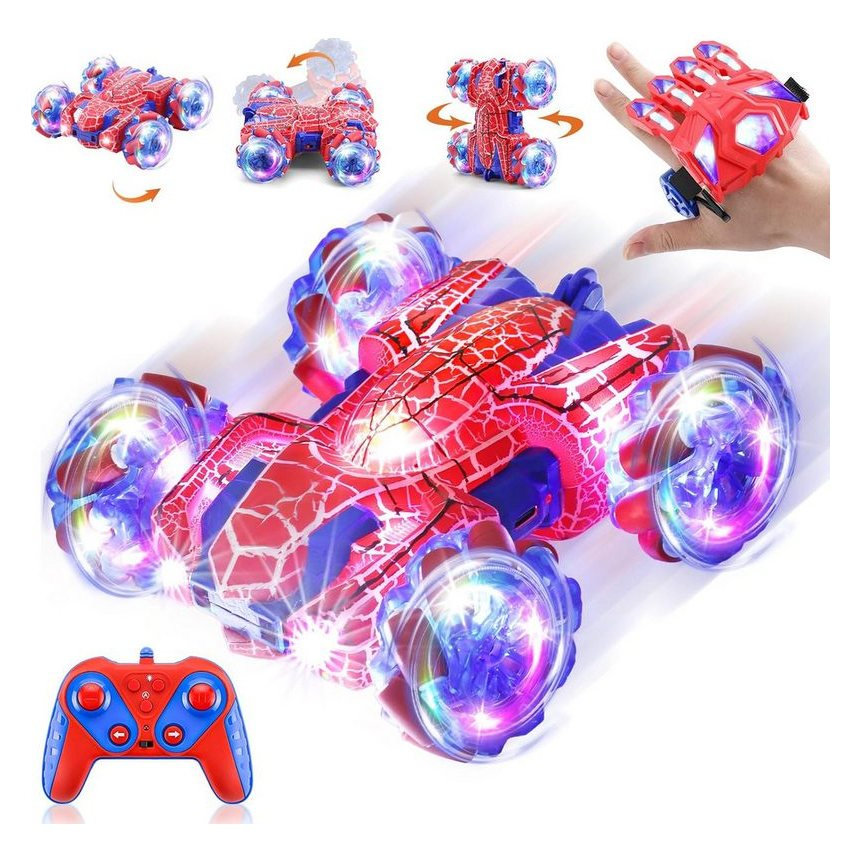
RC stunt car 2.4 GHz (360-degree spin, rechargeable, amphibious)

Giant teddy bear 100 cm (plush, extra soft)Extra-soft 100 cm plush teddy with 100% PP filling, a gift item for Valentine's Day, birthdays and Christmas.

Squishy dumplings and food-shape squishies (dumpling, butter, croissant, cake slice, mystery bag, TPR/PU foam)
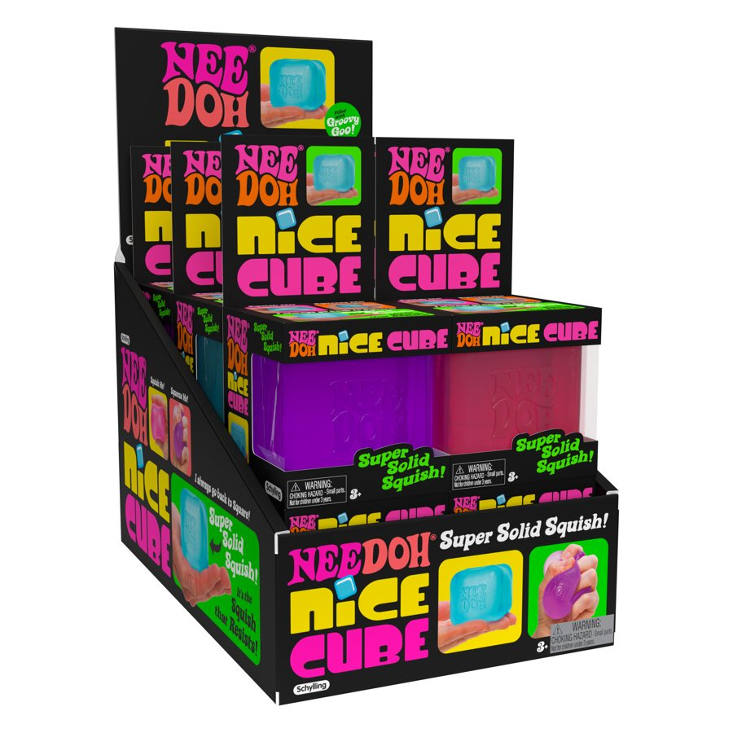
Stress squeeze cubes and balls (cube, gumdrop, fuzzball, own design, TPR/gel fill)Soft, translucent squeeze cubes with gel or dough fill in own design that slowly return to shape.
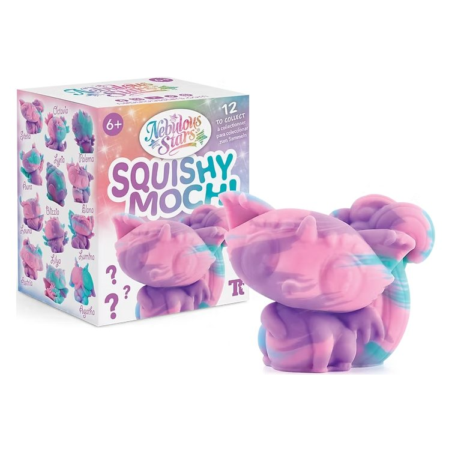
Silicone taba/mochi squishies and cake squishies (sugar, fruit and cake shapes, taba style, own design)Soft taba and mochi squishies plus cake shapes for ASMR touch, as a children's collectible or an office stress item for adults.

Butter slime set, 4 colours (ready-made slime, butter/cloud, non-sticky)Soft, stretchy ready-made slime in four colours (blue, pink, green, yellow), ready to play with no separate activator kit.

Plush bag-charm blind-box series (mini plush, carabiner, own characters)Collectible series of soft mini plush charms with carabiner in blind-box packaging, 6-12 designs, own character design.

Keycap fidget keychain (clicky keycap with switch, collectible designs, optional LED)Small clicker charm shaped like a keycap with a real switch feel, own design and optional LED.

Friendship bracelet making kit (beads, letters, elastic cord, kids and teen kit)Colourful bead set for designing and gifting personalised bracelets.

Mini toy assortment for pinatas and party favours (100-200 pcs: mini squishies, fidget minis, erasers, stamps, yo-yos)Mixed small-toy assortment as filler for pinatas, children's birthdays and school cones.

Toy advent calendar with 24 squishy/fidget surprises (carton box 18 x 28 cm)

Brick flower bouquet and bonsai kit (own design, kidult decor set)Botanical ABS brick set: a flower bouquet or bonsai to build yourself, a lasting decoration for hobbyists and adults.

Metal fidget slider / push card (magnetically guided slider, haptic gadget)Haptic metal gadget in card format: the slider snaps in magnetically with a crisp click - for adults and teens at the desk.
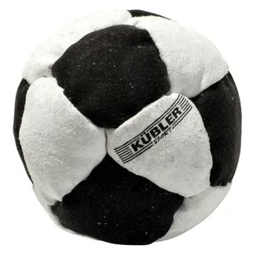
Footbag / hacky sack (faux leather or crochet, granulate filling, also as promo item)Handy granulate-filled kick bag: the rediscovered retro classic for schoolyard, beach and promotions.

Trading-card binder, 9-pocket, 360 cards (PU cover, zipper)Zippered album with 20 PP inner sheets of 9 pockets per side for standard-size trading cards, no licensed motifs, custom logo.

Liquid-motion timer / sensory hourglass (drop hourglass, oil-water, calm-down)Calming liquid timer in an acrylic housing where drops travel slowly downwards; glitter filling as an option on request.
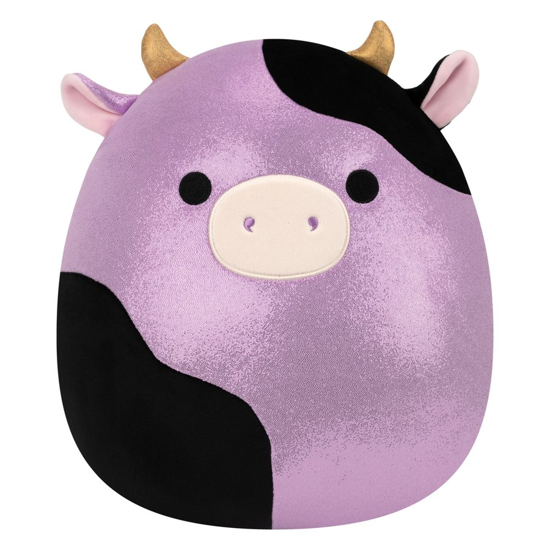
Cuddly round plush cushion in marshmallow shape (own design, approx. 35 cm, extra soft)Round, extra-soft plush cushion with an embroidered face in a marshmallow look for cuddling, decorating and gifting.
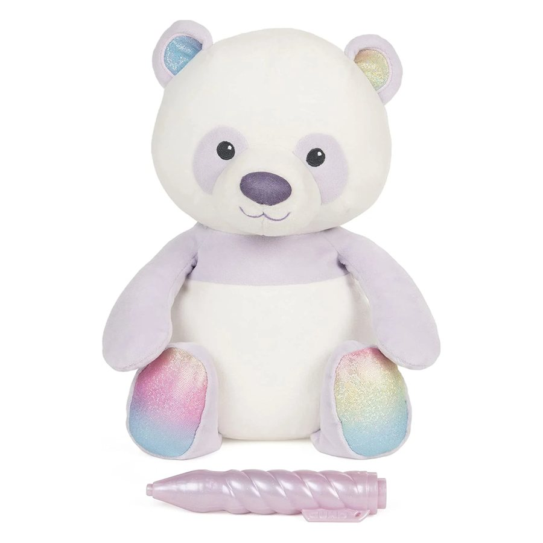
Light-painting plush toy with glow pen (glow-in-the-dark plush for drawing with light, no paint)Plush toy with glow-in-the-dark fabric: children draw glowing motifs in the dark with a glow pen, without paint and without mess.

Bubble gun with LED (rechargeable, bazooka shape, refill bottle, outdoor and party toy)Rechargeable bubble gun in bazooka design with LED light effect for garden, beach and parties.

Stomp rocket set (foot air-pressure launcher, 3 foam rockets, outdoor toy)Foot-pedal launcher that shoots soft foam rockets into the air by air pressure - active fun for garden and park.

Digital kids camera (1080p photo/video, silicone case, selfie lens, SD card, no Wi-Fi)Rugged toy camera for children aged 3+ with photo, video and selfie functions – offline, no app, no cloud.

RC dinosaur (T-Rex, remote controlled, walking, with sound, light and water mist, rechargeable)Walking remote-controlled dinosaur with roar, light effects and spray mist – a show-stopper for children.
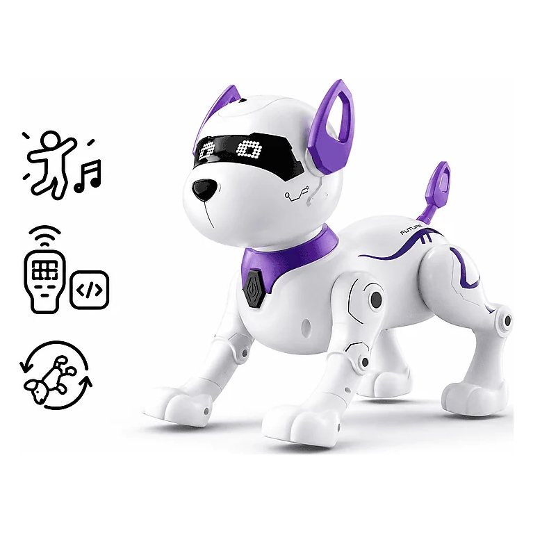
Interactive robot dog (touch and sound sensors, walking, remote control, offline, no cloud/AI app)Walking robot dog with touch sensor, barking, songs and remote control – companion and coding toy without a cloud.

Wooden building block set, 100 pcs (colourful, storage box, motor skills/Montessori)One hundred colourful wooden blocks in assorted shapes for building, stacking and sorting, packed in a box or carton.

Kids' puzzle set 3-in-1 (cardboard, dinosaur/animal motifs, 144 pcs)Three kids' puzzles of 48 pieces each with dinosaur or animal motifs in one folding box.

Kids' balance bike 12 inch (steel frame, EVA tyres, height-adjustable)

Battery water blaster (fully electric, refillable, age 8+)Battery-powered water blaster with automatic water intake and a 760 ml tank for garden, pool and beach.
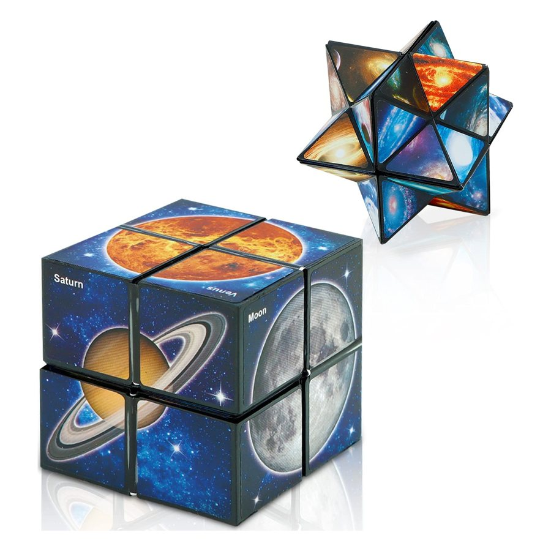
Fidget star cube (Euclidean cube / galaxy cube, transforming puzzle)Palm-sized plastic transforming cube with marine-animal print as a fidget toy and brain puzzle.
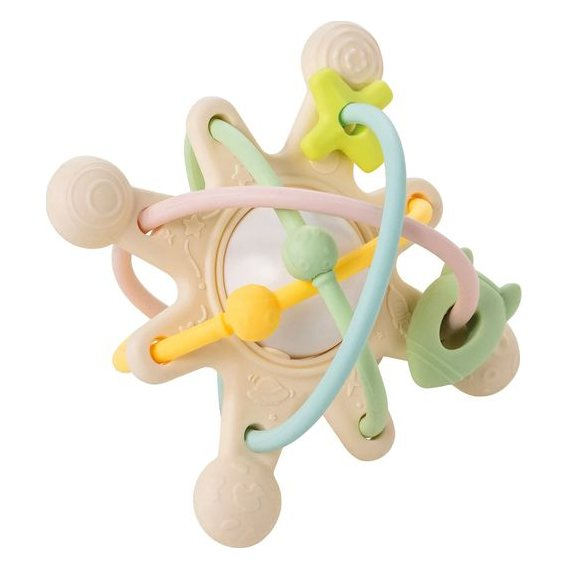
Silicone teether rattle set, 4 pcs (BPA-free, babies 0-12 months)Soft silicone grasp toys with rattle for the teething phase.

Wooden rainbow stacking rings (Montessori, toddlers)Colourful wooden rings for stacking and sorting.

Wooden knob puzzle, animal motifs (peg puzzle, 1+)Peg puzzle with wooden knobs for small hands.

Plastic playing cards poker, 54 cards (PVC, waterproof)Waterproof PVC poker cards, washable.

Speed cube 3x3 stickerless (optional magnetic)Fast 3x3 cube without stickers.

Wooden xylophone elephant, 8 notes (toddlers, with mallet)Children's wooden xylophone with mallet.
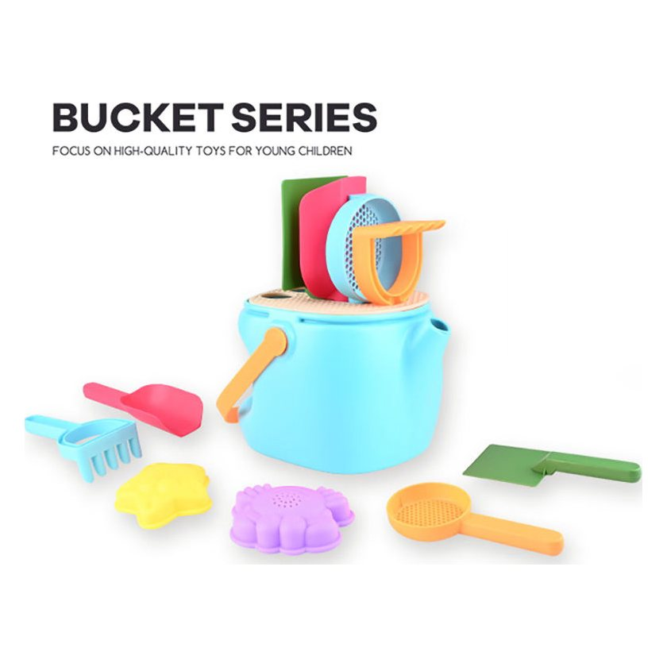
Sand toy set 9 pcs (bucket, shovel, rake, moulds, mesh bag)Beach and sandbox set in plastic.